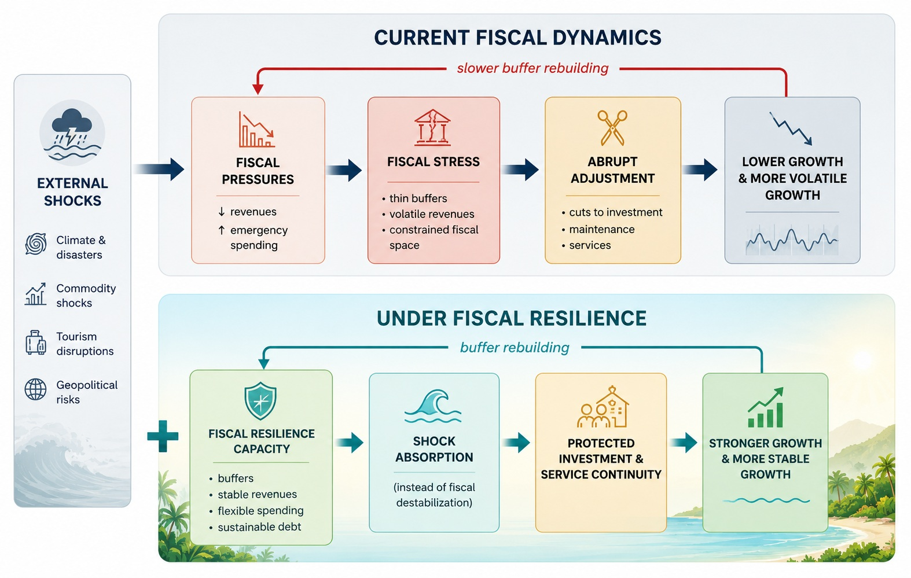

Breaking the shock–adjustment cycle with fiscal resilience
How fiscal resilience helps protect investment, services, and growth.
Pacific island countries have repeatedly adjusted, recovered, and rebuilt. The challenge is durability: shocks can weaken revenues, raise spending needs, force abrupt adjustment, and slow the rebuilding of buffers. Fiscal resilience changes this pathway by helping countries absorb shocks, protect essential investment and services, and sustain more stable growth.

Click on each box to explore how shocks translate into fiscal pressure — and how stronger fiscal systems can absorb shocks while protecting growth.
Tip: hover over the diagram to see clickable areas. Click a box for a short explanation.
Five pillars for strengthening fiscal resilience
Once the fiscal challenge is diagnosed, the framework points to five areas where policy action can strengthen resilience, protect fiscal space, and support durable growth.